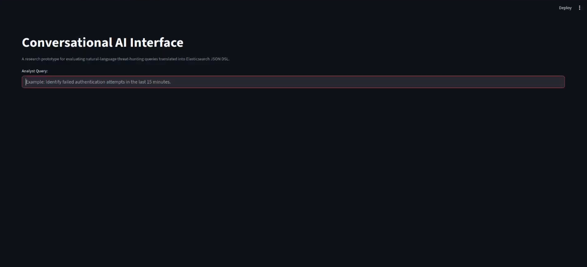
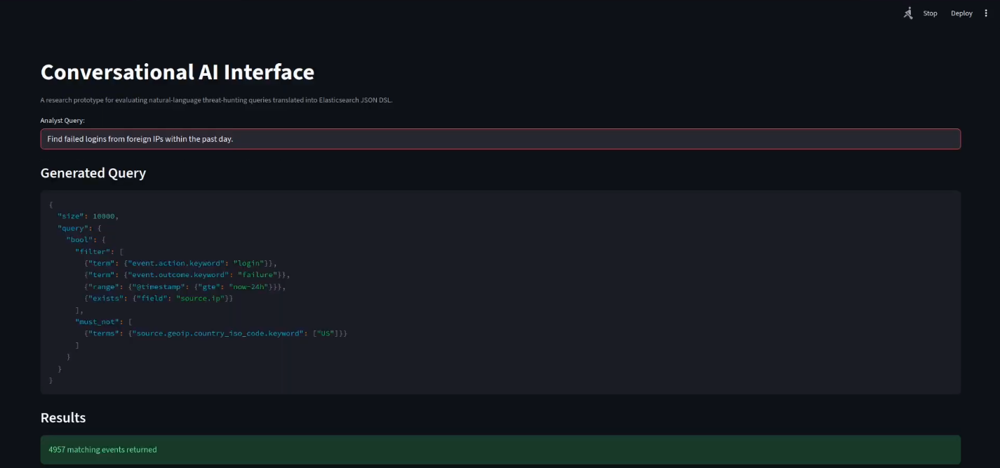
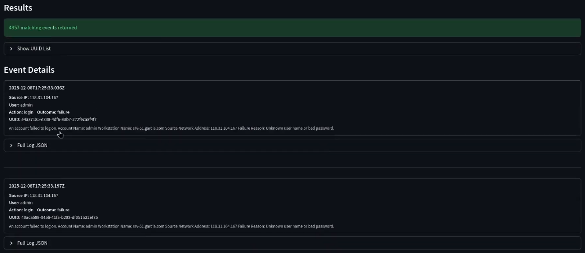

I am a Computer Science Engineer, self-taught programmer, and AI trainer from Charleston, South Carolina.
I earned my B.S. in Computer Science and Engineering with a minor in Mathematics from Charleston Southern
University (>3.90 GPA), and I enjoy turning complex problems into clean, efficient, and reliable software.
After 11 years of self-taught learning, including proficiency before the AI revolution, my work encompasses C++, Java, and Python, with additional experience in C, C#, Rust, JavaScript, and AI
development. My hands-on work spans full-stack development, database management, Linux and NixOS systems,
and game/simulation development with Unity, Godot, and Unreal Engine 5. I've competed in ICPC/CCPC programming
contests, interned in cybersecurity R&D at NIWC, and co-authored an IEEE RE 2026 paper on LLM-assisted
software requirements visualization.
Current Skills
Software development
Building robust, efficient applications and systems in C++, Java, Python, C#, and Rust.
Game & simulation development
Creating games and real-time simulations with Unity, Godot, Unreal Engine 5, and SDL2.
AI training & development
Training and evaluating LLM coding abilities and building LLM-assisted development workflows.
Full-stack web development
Responsive sites, PWAs, and data-driven web apps, optimized, accessible, and deployed end to end.
Resume
Education
Charleston Southern University
Class of 2026
B.S. in Computer Science and Engineering, Minor in Mathematics - GPA 3.9/4.0. Dean's List (2023, 2024,
2025, 2026), member of the Alpha Chi National College Honor Society, and recipient of the CSU Jairy C. Hunter
and SC LIFE scholarships.
Self-taught programmer
Ongoing
Continuous self-directed learning well beyond the classroom: Linux systems, database management,
full-stack development, game engines (Unity, Godot, Unreal Engine 5), and AI/LLM tooling.
Experience
Software Developer - AI Trainer (Contract), DataAnnotation
Apr. 2024 - Present
Trains AI coding abilities by examining, scrutinizing, and rewriting generated code, grading model
output against detailed rubrics, and writing comprehensive reports on AI code performance.
ACE Cyber R&D Intern, NIWC / Core4ce
Aug. 2025 - Dec. 2025
Conducted research and authored a white paper for NIWC. Designed and implemented a conversational AI
interface for querying Elasticsearch databases, and presented research findings at NIWC facilities to
technical staff and program stakeholders.
Undergraduate Researcher - OntologyWeb
IEEE RE 2026
Co-authored "LLM-Assisted Workflow for Structural Difference Visualization in Evolving Software
Requirements," accepted as a Poster & Tool Demo at the 2026 IEEE 34th International Requirements
Engineering Conference. Built the prototype in Python with Dash, dash-cytoscape, rdflib, and a local
LLM via Ollama.
TrueSizeOfGames.com is
an interactive website that lets you compare the map sizes of video games to any location on Earth. It
contains a full world map, so you can overlay a game's map on top of your own hometown, find your real
location with a single click, and see just how vast (or tiny) a game world really is.
Maps can be dragged anywhere, and tapping a map reveals its area and controls for color, transparency,
rotation, and removal. A search bar makes it easy to find and overlay new maps, and if a game isn't
listed yet, users can upload a custom map image and resize and position it however they like.
I am the solo developer of this website, and built it end to end from the interactive map UI and
search system to the hosting and deployment.
A real-time falling-sand particle simulation built with C++17 and SDL2. Instead of rigid bodies and
collision meshes, matter is represented as individual particles in a 2D cellular matrix, each one belongs
to an element type and follows its own simple rules, and the emergent behavior of thousands of
particles interacting produces natural-looking sand, water, fire, and smoke physics.
The simulation includes over a dozen element types: sand, dirt, coal, and salt fall and pile up (salt
dissolves in water), stone and wood form static structures, water and oil flow and spread, and smoke
and steam rise. Every element is implemented as a subclass of a polymorphic base
Element class, so new materials can be added with their own update behavior without
touching the rest of the engine.
Under the hood, physics runs on a fixed 120 Hz timestep with a bottom-up update order so gravity
behaves correctly, randomized column ordering to prevent directional bias, and hardware-accelerated
SDL2 texture rendering for smooth performance even with a screen full of particles. Left-click paints
the selected element, right-click erases, and the mouse wheel adjusts the brush size.
OntologyWeb is an LLM-assisted workflow for visualizing structural differences in evolving software
requirements. It is the prototype behind my co-authored paper, “LLM-Assisted Workflow for
Structural Difference Visualization in Evolving Software Requirements”, accepted as a Poster &
Tool Demo at the 2026 IEEE 34th International Requirements Engineering Conference (RE 2026).
Requirements modeled as ontologies are difficult to compare across versions as they grow. OntologyWeb
takes RDF requirements ontologies, renders them as interactive graphs, and highlights the structural
differences between evolving versions, using a large language model to assist with the requirements
modeling and comparison work.
The prototype is built in Python with Dash and dash-cytoscape for the interactive graph visualizations
and rdflib for RDF parsing, and runs entirely locally: the LLM runs through Ollama, so no cloud
services or external APIs are required.
Conversational AI Interface for Analyst-Driven Threat Investigation
AI development · Senior Capstone (CSCI 497–498–499) / NIWC ACE Research
My senior capstone
project, conducted as
research with the Naval
Information Warfare Center via the DoD/ACE program and completed in December 2025. Modern Security
Operations Centers (SOCs) generate vast volumes of log data, and analysts must translate their
investigative intent into precise queries written in Elasticsearch's JSON Domain-Specific Language
(DSL), a step that wastes analyst time, creates training bottlenecks for new hires, and makes results
inconsistent across teams. The work built upon prior research in explainable AI, human–AI collaboration
in SOC environments, and Elasticsearch-based threat detection (see the
preliminary
literature map).
This project investigated whether a Conversational AI Interface (CAI) can serve
as an effective, controlled intermediary between analysts and Elasticsearch: the analyst types a
free-form threat-hunting question in natural language, and the system translates it into exactly one
syntactically valid, read-only Elasticsearch query, while preserving the precision and safety that
operational query execution demands. The
hypothesis: an F1 score of at least 0.95 against a pre-tagged dataset of failed-login and
lateral-movement events.
Architecture
The implemented system is three coordinated services. A Python SOC log generator
writes ECS-compliant NDJSON events mixing benign operational activity with deliberately injected
adversarial behaviors, brute-force failed logins, foreign/suspicious IP access, and multi-step
lateral-movement chains (SSH/RDP/SMB), where every event gets a globally unique UUID and its true
label is recorded in a separate reference file (the PI-Key)
that provides exact,
error-free ground truth. Filebeat ships the logs on a cron schedule into
date-partitioned indices (soc-logs-YYYY.MM.DD) on an Elasticsearch / Kibana
9.1.5 cluster hosted with Elastic Cloud Enterprise. The CAI itself is a
Streamlit application whose rule-guided prompt template sends the analyst's input to a locally hosted
Mistral 7B LLM (via Ollama) to produce the JSON DSL query.

Fig 1. The CAI home screen (Streamlit) where an analyst enters a natural-language query.

Fig 2. The CAI displaying the generated Elasticsearch JSON DSL for an analyst query.
Safety was a first-class requirement: a validation layer rejects malformed JSON, unknown fields, and
unsafe constructs such as match_all scans or unbounded result sizes; queries may only
reference known ECS fields with explicit time ranges; time expressions like "past 24 hours" are
resolved deterministically by a timestamp resolver rather than trusting the model; and ambiguous
inputs trigger a clarification request instead of a speculative query. Results are returned raw,
with no automated interpretation, the analyst stays in authority. The testbed ran on
AWS EC2
instances in a dedicated VPC across RHEL 8.10 and Ubuntu 22.04 nodes.

Fig 3. Query results returned to the analyst, with the raw events presented for review.
Results
Metrics were computed by comparing UUIDs returned by each CAI query against the PI-Key, so every
error is attributable to the system's intent interpretation rather than dataset ambiguity.
Failed-login detection reached F1 up to 0.9981, suspicious/foreign IP
activity scored 0.9775, and linguistic robustness averaged F1 0.9821
across five paraphrases of the same question, all meeting the ≥ 0.95 hypothesis benchmark.
Lateral movement was the weakest task: an initial run had perfect recall but 5,068
false positives (F1 0.5858), improving to 0.9408 after prompt refinement, a documented
architectural limitation of single static queries encoding sequence behavior, not an
implementation error. Across all runs every executed query was valid, read-only DSL, and the system
was assessed at Technology Readiness Level 4. All results follow the six test cases of the
project test plan
(PTP-001), with raw run evidence and hashes recorded in the
project research
notebook.
Challenges overcome
Early failures were Elasticsearch schema technicalities, querying country_iso_code
instead of the required .keyword subfield, or misplacing the time range
clause outside bool.filter, solved by turning field-placement rules into hard prompt
constraints. Lateral-movement over-selection was reduced from 5,068 false positives down to 8 using
worked examples in the prompt and foreign-IP filtering. Because real SOC telemetry cannot be
objectively labeled, deterministic ground truth was achieved with fully synthetic logs validated
against canonical reference queries.
Future enhancements
Future work would include exposing the live index mapping to the CAI with a structured execution
feedback loop for self-correction, correlation-aware multi-query plans (EQL sequences or
post-retrieval reasoning) for multi-stage behaviors, analyst-in-the-loop studies toward TRL-5/6,
and expanded threat coverage such as persistence, exfiltration, and privilege escalation.
Source code, testbed configuration, and raw run data are in the project repository, which is private
due to a non-disclosure agreement (NDA). Built with: Python 3.11 · Streamlit · Ollama (Mistral 7B) ·
Elasticsearch/Kibana 9.1.5 (ECE) · Filebeat · Faker · AWS EC2.